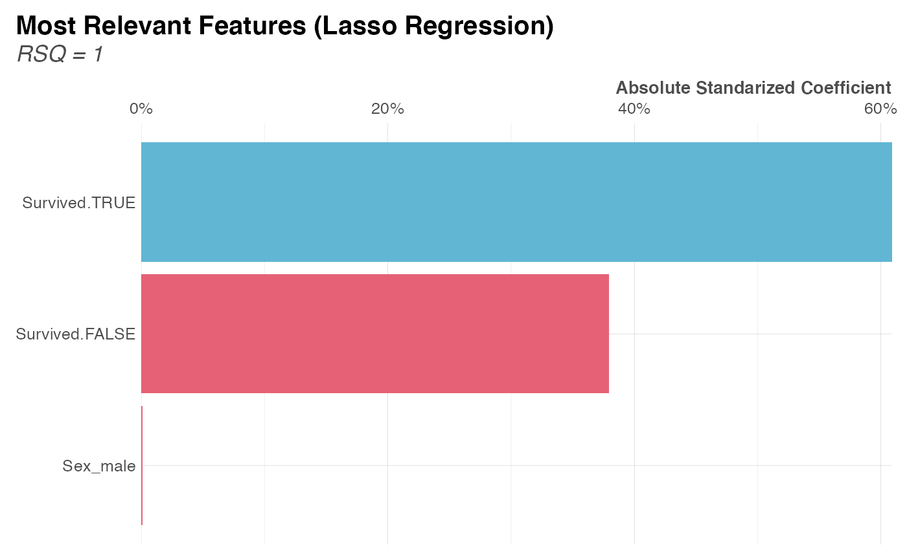

Use Lasso regression to identify the most relevant variables that
can predict/identify another variable. You might want to compare
with corr_var() and/or x2y() results to compliment
the analysis No need to standardize, center or scale your data.
Tidyverse friendly.
lasso_vars(
df,
variable,
ignore = NULL,
nlambdas = 100,
nfolds = 10,
top = 20,
quiet = FALSE,
seed = 123,
...
)Dataframe. Any dataframe is valid as ohse will be applied to
process categorical values, and values will be standardize automatically.
Variable. Independent variable.
Character vector. Variables to exclude from study.
Integer. Number of lambdas to be used in a search.
Integer. Number of folds for K-fold cross-validation (>= 2).
Integer. Plot top n results only.
Boolean. Keep quiet? Else, show messages.
Numeric.
Additional parameters passed to ohse().
List. Contains lasso model coefficients, performance metrics, the actual model fitted and a plot.
Other Machine Learning:
ROC(),
conf_mat(),
export_results(),
gain_lift(),
h2o_automl(),
h2o_predict_API(),
h2o_predict_MOJO(),
h2o_predict_binary(),
h2o_predict_model(),
h2o_selectmodel(),
impute(),
iter_seeds(),
model_metrics(),
model_preprocess(),
msplit()
Other Exploratory:
corr_cross(),
corr_var(),
crosstab(),
df_str(),
distr(),
freqs_df(),
freqs_list(),
freqs_plot(),
freqs(),
missingness(),
plot_cats(),
plot_df(),
plot_nums(),
tree_var(),
trendsRelated()
# \donttest{
# CRAN
Sys.unsetenv("LARES_FONT") # Temporal
data(dft) # Titanic dataset
m <- lasso_vars(dft, Survived, ignore = c("Cabin"))
#> >>> Omitting transformations for 'Cabin', 'Survived'
#> >>> One Hot Encoding applied to 4 variables: 'Pclass', 'Ticket', 'Embarked', 'Sex'
#> >>> Searching for optimal lambda with CV...
#> Found best lambda: 0.02351
#> >>> Fetching most relevant variables...
#> >>> Generating plots for Survived...
#> Elapsed time: 9.89s
print(m$coef)
#> # A tibble: 10 × 6
#> names coefficients standardized_coefficients abs prc coef
#> <chr> <dbl> <dbl> <dbl> <dbl> <chr>
#> 1 Sex_male -0.474 -0.227 0.227 0.439 negative
#> 2 Pclass_1 0.252 0.108 0.108 0.209 positive
#> 3 Ticket_1601 0.455 0.0402 0.0402 0.0778 positive
#> 4 Pclass_2 0.0970 0.0393 0.0393 0.0761 positive
#> 5 Age -0.00243 -0.0352 0.0352 0.0682 negative
#> 6 Ticket_OTHER 0.143 0.0351 0.0351 0.0680 positive
#> 7 Ticket_113760 0.148 0.00990 0.00990 0.0192 positive
#> 8 Embarked_C 0.0249 0.00975 0.00975 0.0189 positive
#> 9 Ticket_347082 -0.101 -0.00896 0.00896 0.0173 negative
#> 10 Fare 0.0000690 0.00343 0.00343 0.00663 positive
print(m$metrics)
#> # A tibble: 1 × 7
#> rmse mae mape mse rsq rsqa bestlambda
#> <dbl> <dbl> <dbl> <dbl> <dbl> <dbl> <dbl>
#> 1 0.377 0.308 1.45 0.142 0.409 0.409 0.0235
plot(m$plot)

# }